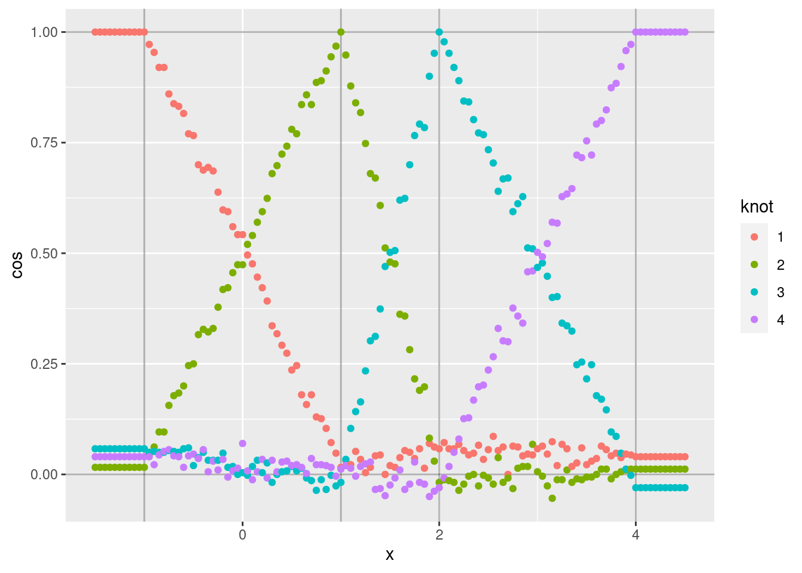
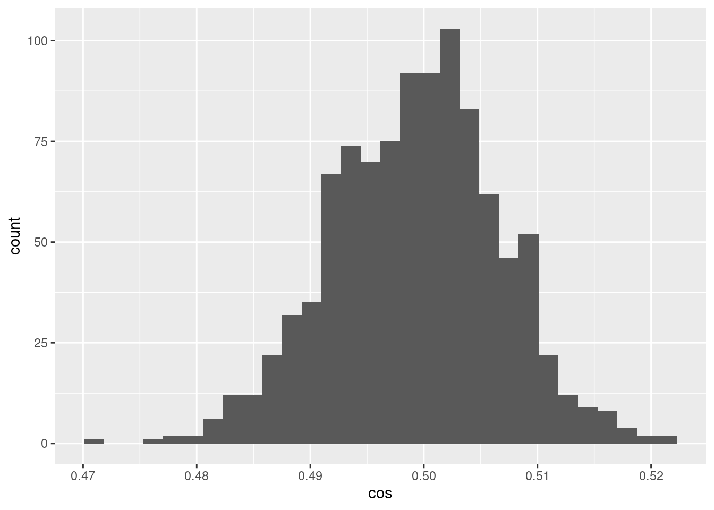
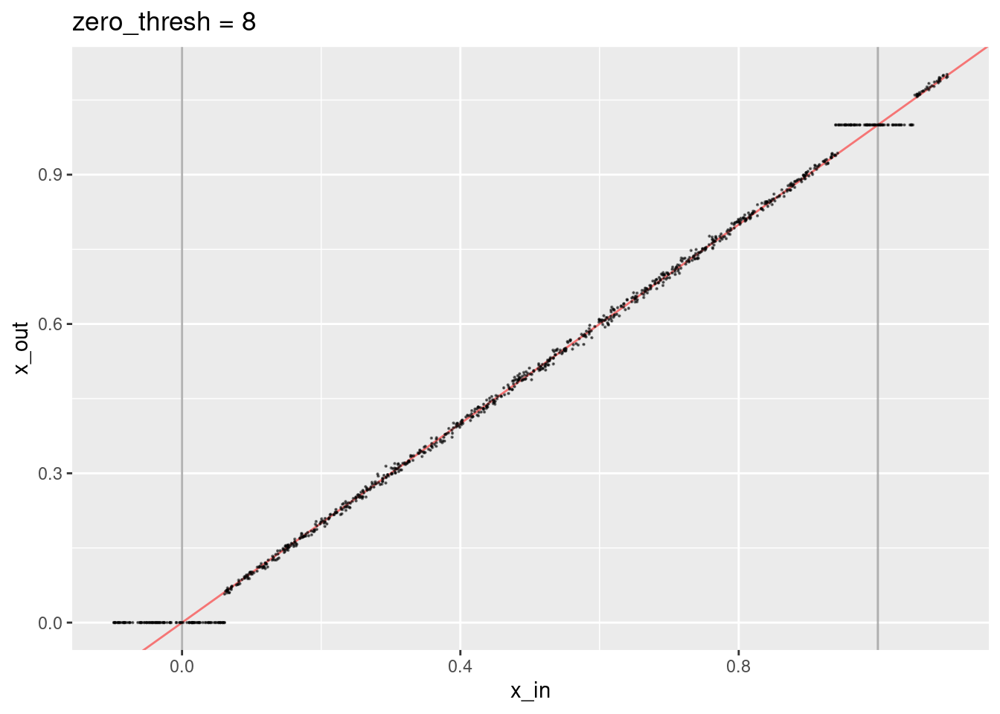
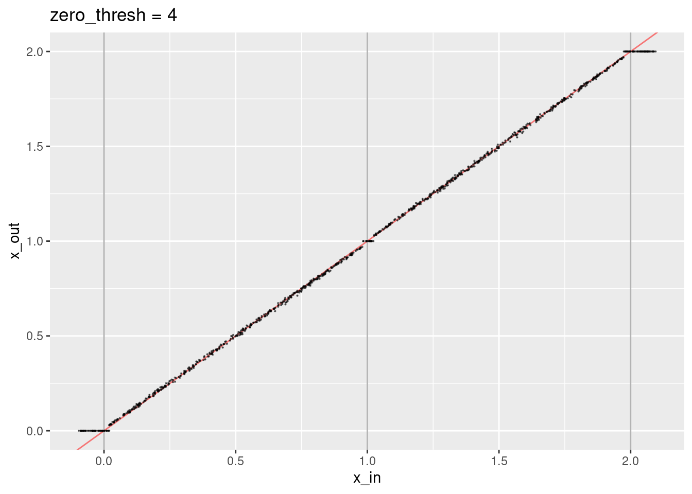
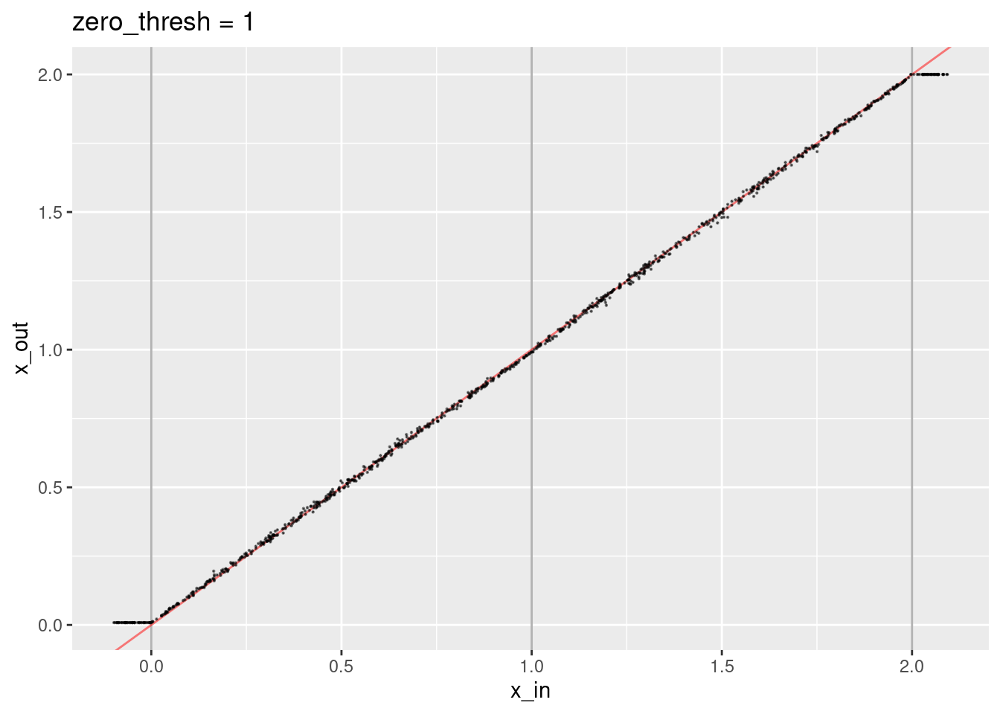
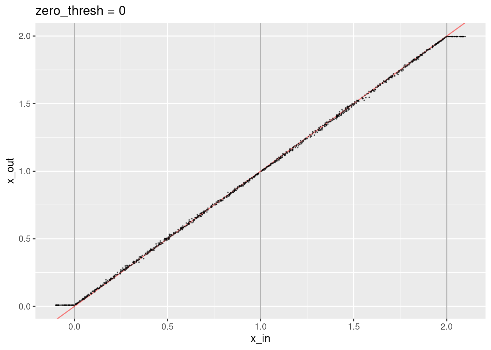

Scalar Encoder/Decoder (Linear Interpolation Spline)
Ross Gayler
2021-08-12
Last updated: 2021-08-19
Checks: 7 0
Knit directory:
VSA_altitude_hold/
This reproducible R Markdown analysis was created with workflowr (version 1.6.2). The Checks tab describes the reproducibility checks that were applied when the results were created. The Past versions tab lists the development history.
Great! Since the R Markdown file has been committed to the Git repository, you know the exact version of the code that produced these results.
Great job! The global environment was empty. Objects defined in the global environment can affect the analysis in your R Markdown file in unknown ways. For reproduciblity it’s best to always run the code in an empty environment.
The command set.seed(20210617) was run prior to running the code in the R Markdown file.
Setting a seed ensures that any results that rely on randomness, e.g.
subsampling or permutations, are reproducible.
Great job! Recording the operating system, R version, and package versions is critical for reproducibility.
Nice! There were no cached chunks for this analysis, so you can be confident that you successfully produced the results during this run.
Great job! Using relative paths to the files within your workflowr project makes it easier to run your code on other machines.
Great! You are using Git for version control. Tracking code development and connecting the code version to the results is critical for reproducibility.
The results in this page were generated with repository version 852c903. See the Past versions tab to see a history of the changes made to the R Markdown and HTML files.
Note that you need to be careful to ensure that all relevant files for the
analysis have been committed to Git prior to generating the results (you can
use wflow_publish or wflow_git_commit). workflowr only
checks the R Markdown file, but you know if there are other scripts or data
files that it depends on. Below is the status of the Git repository when the
results were generated:
Ignored files:
Ignored: .Rhistory
Ignored: .Rproj.user/
Ignored: renv/library/
Ignored: renv/local/
Ignored: renv/staging/
Note that any generated files, e.g. HTML, png, CSS, etc., are not included in this status report because it is ok for generated content to have uncommitted changes.
These are the previous versions of the repository in which changes were made
to the R Markdown (analysis/encoder_spline.Rmd) and HTML (docs/encoder_spline.html)
files. If you’ve configured a remote Git repository (see
?wflow_git_remote), click on the hyperlinks in the table below to
view the files as they were in that past version.
| File | Version | Author | Date | Message |
|---|---|---|---|---|
| Rmd | 852c903 | Ross Gayler | 2021-08-19 | Add linear spline regression decoder |
| html | de8dbda | Ross Gayler | 2021-08-18 | Build site. |
| Rmd | af002d9 | Ross Gayler | 2021-08-18 | Add linear spline scalar encoder |
| html | af002d9 | Ross Gayler | 2021-08-18 | Add linear spline scalar encoder |
This notebook documents the implementation of the linear interpolation spline scalar encoder/decoder.
The reasoning behind the design choices is explained in XXX.
1 Make encoder specification
The encoder will map each unique scalar input value to a VSA vector such that similar input values are mapped to similar output VSA vectors.
For programming purposes, the mapping is represented by a spline_spec
object, which is created by vsa_mk_scalar_encoder_spline_spec().
The encoder specification represents a piecewise linear function from the input scalar value to another scalar value.
The piecewise linear function has \(k\) knots, which must be unique scalar values and given in increasing order.
Values of the input scalar that are outside the range of the knots are treated identically to the nearest extreme value of the knots.
There is a unique atomic VSA vector associated with each knot.
If the input scalar is exactly equal to a knot value then the encoder will return the corresponding VSA vector.
If the input scalar lies between two knot value then the encoder will return the weighted sum of the two corresponding VSA vectors with the weighting reflecting the position of the scalar value relative to the two knot values..
The piecewise linear function is specified by the knots given as an
argument to vsa_mk_scalar_encoder_spline_spec() and the VSA vectors
corresponding to the knots are randomly generated. The spline_spec
object captures these two components, which remain constant over the
simulation.
# function to make the specification for a piecewise linear spline encoder
vsa_mk_scalar_encoder_spline_spec <- function(
vsa_dim, # integer - dimensionality of VSA vectors
knots, # numeric vector - scalar knot locations (in increasing order)
seed = NULL # integer - seed for random number generator
) # value # data structure representing linear spline encoder specification
{
### Set up the arguments ###
# The OCD error checking is probably more useful as documentation
if(missing(vsa_dim))
stop("vsa_dim must be specified")
if(!(is.vector(vsa_dim, mode = "integer") && length(vsa_dim) == 1))
stop("vsa_dim must be an integer")
if(vsa_dim < 1)
stop("vsa_dim must be (much) greater than zero")
if(!is.vector(knots, mode = "numeric"))
stop("knots must be a numeric vector")
if(length(knots) < 2)
stop("length(knots) must be >= 2")
if(!all(is.finite(knots)))
stop("all knot values must be nonmissing and finite")
if(length(knots) != length(unique(knots)))
stop("all knot values must be unique")
if(!all(order(knots) == 1:length(knots)))
stop("knot values must be in increasing order")
# check that the specified seed is an integer
if(!is.null(seed) && !(is.vector(seed, mode = "integer") && length(seed) == 1))
stop("seed must be an integer")
# set the seed if it has been specified
if (!is.null(seed))
set.seed(seed)
# generate VSA atoms corresponding to each of the knots
tibble::tibble(
knots_scalar = knots,
knots_vsa = purrr::map(knots, ~ vsa_mk_atom_bipolar(vsa_dim = vsa_dim))
)
}Do some very small scale testing.
Generate a tiny spline_spec object and display the contents.
ss <- vsa_mk_scalar_encoder_spline_spec(vsa_dim = 10L, knots = c(-1, 1, 2))
ss# A tibble: 3 × 2
knots_scalar knots_vsa
<dbl> <list>
1 -1 <int [10]>
2 1 <int [10]>
3 2 <int [10]>ss$knots_vsa[[1]] [1] -1 1 -1 1 -1 -1 1 1 -1 1ss$knots_vsa[[2]] [1] 1 1 1 1 -1 1 1 1 1 1ss$knots_vsa[[3]] [1] -1 -1 -1 -1 -1 1 1 -1 1 -1- The contents are as expected.
2 Apply encoding
# function to encode a scalar numeric value to a VSA vector
# This function uses a linear interpolation spline
# to interpolate between a sequence of VSA vectors corresponding to the spline knots
vsa_encode_scalar_spline <- function(
x, # numeric[1] - scalar value to be encoded
spline_spec # data frame - spline spec created by vsa_mk_scalar_encoder_spline_spec()
) # numeric # one VSA vector, the encoding of the scalar value
{
### Set up the arguments ###
# The OCD error checking is probably more useful as documentation
if (missing(x))
stop("x must be specified")
if (!(is.vector(x, mode = "numeric") && length(x) == 1))
stop("x must be a numeric scalar")
if (is.na(x))
stop("x must be non-missing")
if (!is.finite(x))
stop("x must be finite")
if (missing(spline_spec))
stop("spline_spec must be specified")
if (
!(
is_tibble(spline_spec) &&
all(c("knots_scalar", "knots_vsa") %in% names(spline_spec))
)
)
stop("spline_spec must be a spline specification object")
# Map the scalar into a continuous index across the knots
# Linearly interpolate the input scalar onto a scale in which knots correspond to 1:n
i <- approx(
x = spline_spec$knots_scalar, y = seq_along(spline_spec$knots_scalar),
rule = 2, # clip x to fit the range of the knots
xout = x
)$y # get the interpolated value only
# Get the knot indices immediately above and below the index value
i_lo <- floor(i)
i_hi <- ceiling(i)
# Return the VSA vector corresponding to the index value
if (i_lo == i_hi) # check if index is on a knot
# Exactly on a knot so return the corresponding knot VSA vector
spline_spec$knots_vsa[[i]]
else {
# Between two knots
# Return the weighted sum of the corresponding knot VSA vectors
i_offset <- i - i_lo
vsa_add(
spline_spec$knots_vsa[[i_lo]], spline_spec$knots_vsa[[i_hi]],
sample_wt = c(1 - i_offset, i_offset)
)
}
}Do some very small scale testing.
Test what happens when the input scalar lies exactly on a knot.
vsa_encode_scalar_spline(-1.0, ss) [1] -1 1 -1 1 -1 -1 1 1 -1 1vsa_encode_scalar_spline( 1.0, ss) [1] 1 1 1 1 -1 1 1 1 1 1vsa_encode_scalar_spline( 2.0, ss) [1] -1 -1 -1 -1 -1 1 1 -1 1 -1- The returned values are equal to the VSA vectors at the corresponding knots.
Test what happens when the input scalar falls outside the range of the knots.
vsa_encode_scalar_spline(-1.1, ss) [1] -1 1 -1 1 -1 -1 1 1 -1 1vsa_encode_scalar_spline( 2.1, ss) [1] -1 -1 -1 -1 -1 1 1 -1 1 -1- Input values outside the range of the knots are mapped to the nearest extreme knot.
Check that intermediate values are random (because of the random
sampling in vsa_add()).
# remind us of the knot values
ss$knots_vsa[[1]] [1] -1 1 -1 1 -1 -1 1 1 -1 1ss$knots_vsa[[2]] [1] 1 1 1 1 -1 1 1 1 1 1# identify which elements are identical for the two knots
ss$knots_vsa[[1]] == ss$knots_vsa[[2]] [1] FALSE TRUE FALSE TRUE TRUE FALSE TRUE TRUE FALSE TRUE# interpolate midway between those two knots
vsa_encode_scalar_spline(0, ss) [1] -1 1 -1 1 -1 1 1 1 -1 1vsa_encode_scalar_spline(0, ss) [1] -1 1 1 1 -1 -1 1 1 -1 1vsa_encode_scalar_spline(0, ss) [1] -1 1 1 1 -1 1 1 1 1 1vsa_encode_scalar_spline(0, ss) [1] -1 1 1 1 -1 -1 1 1 1 1Elements 3, 4, 6, 7, and 8 of the first and second knot vectors are identical, so the result of adding them is constant.
The other element values vary between the two knot vectors, so the corresponding interpolated values will vary because of the random sampling in
vsa_add()(although some may be identical by chance)
Check that interpolation has the expected effect on the angles of the vectors.
Initially, use relatively low dimensional VSA vectors (vsa_dim = 1e3)
to give greater variability to the results.
# make an encoder specification with realistic vector dimension
ss <- vsa_mk_scalar_encoder_spline_spec(vsa_dim = 1e3L, knots = c(-1, 1, 2, 4))
# get the vectors corresponding to the knots
v1 <- ss$knots_vsa[[1]]
v2 <- ss$knots_vsa[[2]]
v3 <- ss$knots_vsa[[3]]
v4 <- ss$knots_vsa[[4]]
# make a sequence of scalar values that (more than) span the knot range
d <- tibble::tibble(
x = seq(from = -1.5, to = 4.5, by = 0.05)
) %>%
dplyr::rowwise() %>%
dplyr::mutate(
# encode each value of x
v_x = vsa_encode_scalar_spline(x[[1]], ss) %>% list(),
# get the cosine between the encoded x and each of the knot vectors
cos_1 = vsa_cos_sim(v_x, v1),
cos_2 = vsa_cos_sim(v_x, v2),
cos_3 = vsa_cos_sim(v_x, v3),
cos_4 = vsa_cos_sim(v_x, v4)
) %>%
dplyr::ungroup() %>%
dplyr::select(-v_x) %>%
tidyr::pivot_longer(cos_1:cos_4,
names_to = "knot", names_prefix = "cos_",
values_to = "cos")
d %>% ggplot(aes(x = x)) +
geom_hline(yintercept = c(0, 1), alpha = 0.3) +
geom_vline(xintercept = c(-1, 1, 2, 4), alpha = 0.3) +
geom_point(aes(y = cos, colour = knot))
Each curve shows the cosine similarity of the encoded scalar (\(x\)) to the VSA vector corresponding to one of the knots.
- Each curve shows the expected linear ramp as it moves between the two bounding knots.
- The cosine similarity at the peak of each curve is exactly one because the encoded scalar is identical to the corresponding knot vector.
- The curves corresponding to intermediate values of \(x\) are noisy
around a straight line. The noise is due to the encoding being a
random weighted blend of the bounding knot vectors (due to applying
vsa_add()). - The minimum values of each curve are not exactly zero, because
they correspond to the angle between two randomly selected vectors.
That is, the cosine similarity is distributed around zero. Repeat
that analysis using relatively high dimensional VSA vectors
(
vsa_dim = 1e5) to reduce the variability of the results.
# make an encoder specification with realistic vector dimension
ss <- vsa_mk_scalar_encoder_spline_spec(vsa_dim = 1e5L, knots = c(-1, 1, 2, 4))
# get the vectors corresponding to the knots
v1 <- ss$knots_vsa[[1]]
v2 <- ss$knots_vsa[[2]]
v3 <- ss$knots_vsa[[3]]
v4 <- ss$knots_vsa[[4]]
# make a sequence of scalar values that (more than) span the knot range
d <- tibble::tibble(
x = seq(from = -1.5, to = 4.5, by = 0.05)
) %>%
dplyr::rowwise() %>%
dplyr::mutate(
# encode each value of x
v_x = vsa_encode_scalar_spline(x[[1]], ss) %>% list(),
# get the cosine between the encoded x and each of the knot vectors
cos_1 = vsa_cos_sim(v_x, v1),
cos_2 = vsa_cos_sim(v_x, v2),
cos_3 = vsa_cos_sim(v_x, v3),
cos_4 = vsa_cos_sim(v_x, v4)
) %>%
dplyr::ungroup() %>%
dplyr::select(-v_x) %>%
tidyr::pivot_longer(cos_1:cos_4,
names_to = "knot", names_prefix = "cos_",
values_to = "cos")
d %>% ggplot(aes(x = x)) +
geom_hline(yintercept = c(0, 1), alpha = 0.3) +
geom_vline(xintercept = c(-1, 1, 2, 4), alpha = 0.3) +
geom_point(aes(y = cos, colour = knot))
- As expected, the noise is greatly reduced.
With the linear spline encoding, the representations at the knots are
always identical to the knot vectors. For intermediate values of the
numeric scalar the encoding is a weighted blend of the bounding knot
vectors. This blending is implemented by vsa_add(), so the encoding
will be different on each occasion the encoding is generated.
Demonstrate the distribution of cosine similarity between encodings of the same scalar value. Use a scalar value midway between the bounding knots to maximise the variation between encodings.
Use VSA vectors with dimensionality \(10^4\) to match the default dimensionality we intend to use.
# make an encoder specification with realistic vector dimension
ss <- vsa_mk_scalar_encoder_spline_spec(vsa_dim = 1e4L, knots = c(0, 1))
# generate n pairs of encodings of the same scalar (x)
x <- 0.5 # scalar to encode (in the range 0 .. 1)
n <- 1e3 # number of pairs to create
# make a one-column data frame with the cos similarity of each vector pair
d <- tibble::tibble(
cos = purrr::map_dbl(1:n, ~
vsa_cos_sim(
vsa_encode_scalar_spline(x, ss),
vsa_encode_scalar_spline(x, ss)
)
)
)
d %>% ggplot() +
geom_histogram(aes(x = cos))`stat_bin()` using `bins = 30`. Pick better value with `binwidth`.
- The encoded values of the scalar midway between the bounding knots differ randomly and have a distribution of cosine similarities to each other that are fairly tightly bounded around 0.5
Repeat the analysis for a scalar much nearer one of the knots.
# make an encoder specification with realistic vector dimension
ss <- vsa_mk_scalar_encoder_spline_spec(vsa_dim = 1e4L, knots = c(0, 1))
# generate n pairs of encodings of the same scalar (x)
x <- 0.05 # scalar to encode (in the range 0 .. 1)
n <- 1e3 # number of pairs to create
# make a one-column data frame with the cos similarity of each vector pair
d <- tibble::tibble(
cos = purrr::map_dbl(1:n, ~
vsa_cos_sim(
vsa_encode_scalar_spline(x, ss),
vsa_encode_scalar_spline(x, ss)
)
)
)
d %>% ggplot() +
geom_histogram(aes(x = cos))`stat_bin()` using `bins = 30`. Pick better value with `binwidth`.
- The cosine similarities between pairs of encodings of the scalar 0.05 is a much tighter distribution around ~0.905
The fact that the encoding is constant at the knots and more variable
between knots seems rather odd. If this is a problem the encoding could
be made constant by using a fixed seed to vsa_add().
3 Apply decoding
The decoder applies the spline specification to a VSA vector and returns a numeric scalar value.
The input VSA vector is compared to each of the knot vectors and the dot product calculated for each comparison. Dot products less than a threshold (close to zero) are set to zero, then all the dot products are normalised to sum to one. The normalised dot products are then used with the scalar knot values to calculate the weighted mean of the scalar knot values. The weighted mean is returned as the output of the decoder.
# function to encode a scalar numeric value to a VSA vector
# This function uses a linear interpolation spline
# to interpolate between a sequence of VSA vectors corresponding to the spline knots
vsa_decode_scalar_spline <- function(
v, # numeric - VSA vector (not necessarily bipolar)
spline_spec, # data frame - spline spec created by vsa_mk_scalar_encoder_spline_spec()
zero_thresh = 4 # numeric[1] - zero threshold (in standard deviations)
) # numeric[1] - scalar value decoded from v
{
### Set up the arguments ###
# The OCD error checking is probably more useful as documentation
if(missing(v))
stop("VSA vector argument (v) must be specified")
if(!is.vector(v, mode = "numeric"))
stop("v must be an numeric vector")
if (missing(spline_spec))
stop("spline_spec must be specified")
if (
!(
is_tibble(spline_spec) &&
all(c("knots_scalar", "knots_vsa") %in% names(spline_spec))
)
)
stop("spline_spec must be a spline specification object")
if(!missing(zero_thresh) &&
!(is.vector(zero_thresh, mode = "numeric") && length(zero_thresh) == 1))
stop("zero_thresh must be numeric")
# get the dot product of the encoded scalar with each of the knot vectors
dotprod <- spline_spec$knots_vsa %>%
purrr::map_dbl(.f = vsa_dotprod, v2 = v)
# set dot products below the zero threshold to 0.5
zero_thresh <- zero_thresh * sqrt(length(v) * 0.5) # sd = sqrt(n p q) = sqrt(vsa_dim 0.5 0.5)
dotprod <- ifelse(dotprod < zero_thresh, 0, dotprod)
# normalise the dot products
dotprod <- dotprod / sum(dotprod)
# return the weighted sum of the knot scalara
sum(dotprod * spline_spec$knots_scalar)
}Do some very small scale testing.
3.1 Values decoded correctly
Check that encoded values are decoded correctly across the range of the knots.
# make an encoder specification with realistic vector dimension
ss <- vsa_mk_scalar_encoder_spline_spec(vsa_dim = 1e4L, knots = c(-1, 1, 2, 4))
-1.5 %>% vsa_encode_scalar_spline(ss) %>% vsa_decode_scalar_spline(ss)[1] -1-1 %>% vsa_encode_scalar_spline(ss) %>% vsa_decode_scalar_spline(ss)[1] -10 %>% vsa_encode_scalar_spline(ss) %>% vsa_decode_scalar_spline(ss)[1] -0.009980041 %>% vsa_encode_scalar_spline(ss) %>% vsa_decode_scalar_spline(ss)[1] 11.5 %>% vsa_encode_scalar_spline(ss) %>% vsa_decode_scalar_spline(ss)[1] 1.5042082 %>% vsa_encode_scalar_spline(ss) %>% vsa_decode_scalar_spline(ss)[1] 23 %>% vsa_encode_scalar_spline(ss) %>% vsa_decode_scalar_spline(ss)[1] 2.9951964 %>% vsa_encode_scalar_spline(ss) %>% vsa_decode_scalar_spline(ss)[1] 44.5 %>% vsa_encode_scalar_spline(ss) %>% vsa_decode_scalar_spline(ss)[1] 4- The decoded values at the knots are exactly correct.
- The decoded values between the knots are approximately correct.
Check the random variation of intermediate values.
0 %>% vsa_encode_scalar_spline(ss) %>% vsa_decode_scalar_spline(ss)[1] -0.007584830 %>% vsa_encode_scalar_spline(ss) %>% vsa_decode_scalar_spline(ss)[1] -0.0035928140 %>% vsa_encode_scalar_spline(ss) %>% vsa_decode_scalar_spline(ss)[1] -0.00039920160 %>% vsa_encode_scalar_spline(ss) %>% vsa_decode_scalar_spline(ss)[1] -0.015568860 %>% vsa_encode_scalar_spline(ss) %>% vsa_decode_scalar_spline(ss)[1] 0.0003992016- The decoded values are tightly clustered around the encoded value.
3.2 Zero threshold
Look at the effect of the zero threshold.
When there are more than two knots there is more than one interval bounded by knots. When decoding, we are only interested in the knots bounding the interval containing the encoded value. The other knots should be ignored.
These irrelevant knots will have small dot products with the encoded scalar value. Unfortunately, the dot products will not be exactly zero. They will be distributed in a small range around zero.
The aim of the zero threshold is to treat dot products in the range that would be produced by approximately orthogonal vectors as exactly zero.
In the following analyses I will make life hard for the decoder by having 101 knots. This makes it more likely that at least one of the irrelevant knots will have a dot product above the zero threshold.
Make the zero threshold ridiculously large (10).
ss <- vsa_mk_scalar_encoder_spline_spec(vsa_dim = 1e4L, knots = 0:100)
# encode and decode random values over the first knot interval
runif(n = 1e3, min = -0.1, max = 1.1) %>%
tibble::tibble(x_in = .) %>%
dplyr::rowwise() %>%
dplyr::mutate(
x_out = x_in %>%
vsa_encode_scalar_spline(ss) %>%
vsa_decode_scalar_spline(ss, zero_thresh = 8)
) %>%
dplyr::ungroup() %>%
ggplot() +
geom_vline(xintercept = 0:1, alpha = 0.3) +
geom_abline(slope = 1, intercept = 0, colour = "red", alpha = 0.5) +
geom_point(aes(x = x_in, y = x_out), size = 0.1, alpha = 0.5) +
ggtitle("zero_thresh = 8")
- Encoded values close to the knots are treated as though they are exactly equal to the knots (because the dot product with the knot vector at the other end of the interval is close to zero).
- The decoded values not close to the knots lie along the expected line.
runif(n = 1e3, min = -0.1, max = 1.1) %>%
tibble::tibble(x_in = .) %>%
dplyr::rowwise() %>%
dplyr::mutate(
x_out = x_in %>%
vsa_encode_scalar_spline(ss) %>%
vsa_decode_scalar_spline(ss, zero_thresh = 6)
) %>%
dplyr::ungroup() %>%
ggplot() +
geom_vline(xintercept = 0:1, alpha = 0.3) +
geom_abline(slope = 1, intercept = 0, colour = "red", alpha = 0.5) +
geom_point(aes(x = x_in, y = x_out), size = 0.1, alpha = 0.5) +
ggtitle("zero_thresh = 6")
- The region considered identical to the knot value is smaller.
- The decoded values don’t quite lie on the expected line.
runif(n = 1e3, min = -0.1, max = 1.1) %>%
tibble::tibble(x_in = .) %>%
dplyr::rowwise() %>%
dplyr::mutate(
x_out = x_in %>%
vsa_encode_scalar_spline(ss) %>%
vsa_decode_scalar_spline(ss, zero_thresh = 5)
) %>%
dplyr::ungroup() %>%
ggplot() +
geom_vline(xintercept = 0:1, alpha = 0.3) +
geom_abline(slope = 1, intercept = 0, colour = "red", alpha = 0.5) +
geom_point(aes(x = x_in, y = x_out), size = 0.1, alpha = 0.5) +
ggtitle("zero_thresh = 5")
- A small number of points are way off the expected line because some irrelevant knots have had dot products above the zero threshold.
Try a smaller number of knots, which will make life easier for the decoder.
ss <- vsa_mk_scalar_encoder_spline_spec(vsa_dim = 1e4L, knots = 0:2)
# encode and decode random values over the knot range
runif(n = 1e3, min = -0.1, max = 2.1) %>%
tibble::tibble(x_in = .) %>%
dplyr::rowwise() %>%
dplyr::mutate(
x_out = x_in %>%
vsa_encode_scalar_spline(ss) %>%
vsa_decode_scalar_spline(ss, zero_thresh = 4)
) %>%
dplyr::ungroup() %>%
ggplot() +
geom_vline(xintercept = 0:2, alpha = 0.3) +
geom_abline(slope = 1, intercept = 0, colour = "red", alpha = 0.5) +
geom_point(aes(x = x_in, y = x_out), size = 0.1, alpha = 0.5) +
ggtitle("zero_thresh = 4")
runif(n = 1e3, min = -0.1, max = 2.1) %>%
tibble::tibble(x_in = .) %>%
dplyr::rowwise() %>%
dplyr::mutate(
x_out = x_in %>%
vsa_encode_scalar_spline(ss) %>%
vsa_decode_scalar_spline(ss, zero_thresh = 2)
) %>%
dplyr::ungroup() %>%
ggplot() +
geom_vline(xintercept = 0:2, alpha = 0.3) +
geom_abline(slope = 1, intercept = 0, colour = "red", alpha = 0.5) +
geom_point(aes(x = x_in, y = x_out), size = 0.1, alpha = 0.5) +
ggtitle("zero_thresh = 2")
- The decoded values are not quite aligned with the expected line.
Now try a zero threshold where we expect to see random values above the threshold.
runif(n = 1e3, min = -0.1, max = 2.1) %>%
tibble::tibble(x_in = .) %>%
dplyr::rowwise() %>%
dplyr::mutate(
x_out = x_in %>%
vsa_encode_scalar_spline(ss) %>%
vsa_decode_scalar_spline(ss, zero_thresh = 1)
) %>%
dplyr::ungroup() %>%
ggplot() +
geom_vline(xintercept = 0:2, alpha = 0.3) +
geom_abline(slope = 1, intercept = 0, colour = "red", alpha = 0.5) +
geom_point(aes(x = x_in, y = x_out), size = 0.1, alpha = 0.5) +
ggtitle("zero_thresh = 1")
- The decoded values are not quite aligned with the expected line.
- The decoded values corresponding to the knots are not quite right.
Now set the zero threshold to zero. This avoids negative dot products, which is required to make the weighted sum meaningful.
runif(n = 1e3, min = -0.1, max = 2.1) %>%
tibble::tibble(x_in = .) %>%
dplyr::rowwise() %>%
dplyr::mutate(
x_out = x_in %>%
vsa_encode_scalar_spline(ss) %>%
vsa_decode_scalar_spline(ss, zero_thresh = 0)
) %>%
dplyr::ungroup() %>%
ggplot() +
geom_vline(xintercept = 0:2, alpha = 0.3) +
geom_abline(slope = 1, intercept = 0, colour = "red", alpha = 0.5) +
geom_point(aes(x = x_in, y = x_out), size = 0.1, alpha = 0.5) +
ggtitle("zero_thresh = 0")
Now try disabling the zero threshold.
runif(n = 1e3, min = -0.1, max = 2.1) %>%
tibble::tibble(x_in = .) %>%
dplyr::rowwise() %>%
dplyr::mutate(
x_out = x_in %>%
vsa_encode_scalar_spline(ss) %>%
vsa_decode_scalar_spline(ss, zero_thresh = -Inf)
) %>%
dplyr::ungroup() %>%
ggplot() +
geom_vline(xintercept = 0:2, alpha = 0.3) +
geom_abline(slope = 1, intercept = 0, colour = "red", alpha = 0.5) +
geom_point(aes(x = x_in, y = x_out), size = 0.1, alpha = 0.5) +
ggtitle("zero_thresh = -Inf")
- That’s not obviously different to setting the threshold to zero.
3.3 Random vectors
Try to decode a random vector (i.e. not a valid encoding of a scalar).
Setting a high zero threshold means that with high probability we will end up dividing by zero in the decoder.
vsa_mk_atom_bipolar(1e4L) %>% vsa_decode_scalar_spline(ss, zero_thresh = 4)[1] NaNvsa_mk_atom_bipolar(1e4L) %>% vsa_decode_scalar_spline(ss, zero_thresh = 4)[1] NaNvsa_mk_atom_bipolar(1e4L) %>% vsa_decode_scalar_spline(ss, zero_thresh = 4)[1] NaNvsa_mk_atom_bipolar(1e4L) %>% vsa_decode_scalar_spline(ss, zero_thresh = 4)[1] NaNvsa_mk_atom_bipolar(1e4L) %>% vsa_decode_scalar_spline(ss, zero_thresh = 4)[1] NaNSetting a zero threshold means that approximately half the dot products will be set to zero.
vsa_mk_atom_bipolar(1e4L) %>% vsa_decode_scalar_spline(ss, zero_thresh = 0)[1] NaNvsa_mk_atom_bipolar(1e4L) %>% vsa_decode_scalar_spline(ss, zero_thresh = 0)[1] 0.3464567vsa_mk_atom_bipolar(1e4L) %>% vsa_decode_scalar_spline(ss, zero_thresh = 0)[1] 0.688vsa_mk_atom_bipolar(1e4L) %>% vsa_decode_scalar_spline(ss, zero_thresh = 0)[1] 1.423077vsa_mk_atom_bipolar(1e4L) %>% vsa_decode_scalar_spline(ss, zero_thresh = 0)[1] 1.456954- The probability of dividing by zero is nonzero.
- The “decoded” values lie in the range of the knots.
Disabling the zero threshold results in a very small probability of dividing by zero. The weighted sum no longer makes sense because the weights can be negative. Consequently, the returned value can lie outside the range of the knots.
vsa_mk_atom_bipolar(1e4L) %>% vsa_decode_scalar_spline(ss, zero_thresh = -Inf)[1] 0.6938776vsa_mk_atom_bipolar(1e4L) %>% vsa_decode_scalar_spline(ss, zero_thresh = -Inf)[1] 2.580645vsa_mk_atom_bipolar(1e4L) %>% vsa_decode_scalar_spline(ss, zero_thresh = -Inf)[1] -6.8vsa_mk_atom_bipolar(1e4L) %>% vsa_decode_scalar_spline(ss, zero_thresh = -Inf)[1] 1.342466vsa_mk_atom_bipolar(1e4L) %>% vsa_decode_scalar_spline(ss, zero_thresh = -Inf)[1] 2.702381- Some of the decoded values lie outside the range of the knots.
4 Regression decoding
The decoder above is intended for use where we design a system that requires a vector representation of a scalars quantity to be converted to a numeric scalar to interface with some piece of equipment that can only accept numeric scalars as inputs.
It is relatively common to use VSA representations as the core of a regression/classification task. The output transformation of reservoir computing can also be viewed as an equivalent task. In these tasks the transformation from the high-dimensional vector representation to a numeric scalar is implemented with standard statistical regression techniques.
In this section, I will attempt to use standard statistical regression techniques to decode the encoded scalar representations. (This is being attempted without having recently read the relevant papers in using regression with VSA representations. In the event that this fails to work or becomes a horrible mess I will have to read those papers before making another attempt.)
In using regression to decode VSA representations I will have to create a data matrix with one row per observation (the encoding of a value). One column will correspond to the dependent variable - the target value (i.e. the original scalar value that was encoded). The remaining columns correspond to the independent variables (predictors) - the VSA vector representation of the encoded scalar value. There will be one column for each element of the vector representation.
The number of columns will far exceed the number of rows, so simple
unregularised regression will fail. I will initially attempt to use
regularised regression (elasticnet, implemented by glmnet in R).
4.1 One interval
Start with the simplest possible encoder: one interval, bounded by two knots. Create some data, run the regression, and see what happens. At this stage I won’t bother running replicates to assess variability across atoms. I will arbitrarily choose 101 equally spaced examples as the data.
# use the 'default' VSA dimensionality
vsa_dim <- 1e4L
# create the spline specification
ss_1 <- vsa_mk_scalar_encoder_spline_spec(vsa_dim, knots = c(1, 2))
# create the numeric scalar values to be encoded
x <- seq(1, 2, length.out = 101)
# function to to take a set of numeric scalar values,
# encode them as VSA vectors using the given spline specification,
# and package the results as a data frame for regression modelling
mk_df <- function(
x, # numeric - vector of scalar values to be encoded
ss # data frame - spline specification for scalar encoding
) # value - data frame - one row per scalar, one column for the scalar and each VSA element
{
tibble::tibble(x_num = x) %>% # put scalars as column of data frame
dplyr::rowwise() %>%
dplyr::mutate(
x_vsa = x_num %>% vsa_encode_scalar_spline(ss) %>% # encode each scalar
tibble(e = 1:length(.), e_val = .) %>% # name all the vector elements
tidyr::pivot_wider(names_from = e, names_prefix = "e_", values_from = e_val) %>% # transpose vector to columns
list() # package the value for a list column
) %>%
dplyr::ungroup() %>%
tidyr::unnest(x_vsa) # convert the nested df to columns
}
# create training data
d_train <- mk_df(x, ss_1)
# create testing data
# use the same knot vectors, different sampling in vsa_add()
d_test <- mk_df(x, ss_1)
# take a quick look at the data
d_train# A tibble: 101 × 10,001
x_num e_1 e_2 e_3 e_4 e_5 e_6 e_7 e_8 e_9 e_10 e_11 e_12
<dbl> <int> <int> <int> <int> <int> <int> <int> <int> <int> <int> <int> <int>
1 1 -1 1 -1 1 1 1 -1 1 -1 -1 -1 1
2 1.01 -1 1 -1 1 1 1 -1 1 -1 -1 -1 1
3 1.02 -1 1 -1 1 1 1 -1 1 -1 -1 -1 1
4 1.03 -1 1 -1 1 1 1 -1 1 -1 -1 -1 1
5 1.04 -1 1 -1 -1 1 1 -1 1 -1 -1 -1 1
6 1.05 -1 1 -1 1 1 1 -1 1 -1 -1 -1 1
7 1.06 -1 1 -1 1 1 1 -1 1 -1 -1 1 1
8 1.07 -1 1 -1 1 1 1 -1 1 -1 -1 -1 1
9 1.08 -1 1 -1 1 1 1 -1 1 -1 -1 -1 1
10 1.09 -1 1 -1 1 1 1 -1 1 -1 -1 -1 1
# … with 91 more rows, and 9,988 more variables: e_13 <int>, e_14 <int>,
# e_15 <int>, e_16 <int>, e_17 <int>, e_18 <int>, e_19 <int>, e_20 <int>,
# e_21 <int>, e_22 <int>, e_23 <int>, e_24 <int>, e_25 <int>, e_26 <int>,
# e_27 <int>, e_28 <int>, e_29 <int>, e_30 <int>, e_31 <int>, e_32 <int>,
# e_33 <int>, e_34 <int>, e_35 <int>, e_36 <int>, e_37 <int>, e_38 <int>,
# e_39 <int>, e_40 <int>, e_41 <int>, e_42 <int>, e_43 <int>, e_44 <int>,
# e_45 <int>, e_46 <int>, e_47 <int>, e_48 <int>, e_49 <int>, e_50 <int>, …The data has 101 observations where each has the encoded numeric value and the 10,000 elements of the encoded VSA representation.
Fit a linear (i.e. Gaussian family) regression model, predicting the encoded numeric value from the VSA elements.
Use glmnet() because it fits regularised regressions, allowing it to
deal with the number of predictors being much greater than the number of
observations. Also, it has been engineered for efficiency with large
numbers of predictors.
glmnet() can make use of parallel processing but it’s not needed here
as this code runs sufficiently rapidly on a modest laptop computer.
cva.glmnet() in the code below runs cross-validation fits across a
grid of \(\alpha\) and \(\lambda\) values so that we can choose the best
regularisation scheme. \(\alpha = 1\) corresponds to the ridge-regression
penalty and \(\alpha = 0\) corresponds to the lasso penalty. The \(\lambda\)
parameter is the weighting of the elastic-net penalty.
I will use the cross-validation analysis to select the parameters rather than testing on a hold-out sample, because it is less programming effort and I don’t expect it to make a substantial difference to the results.
# fit a set of models at a grid of alpha and lambda parameter values
fit_1 <- glmnetUtils::cva.glmnet(x_num ~ ., data = d_train, family = "gaussian")
fit_1Call:
cva.glmnet.formula(formula = x_num ~ ., data = d_train, family = "gaussian")
Model fitting options:
Sparse model matrix: FALSE
Use model.frame: FALSE
Alpha values: 0 0.001 0.008 0.027 0.064 0.125 0.216 0.343 0.512 0.729 1
Number of crossvalidation folds for lambda: 10summary(fit_1) Length Class Mode
alpha 11 -none- numeric
nfolds 1 -none- numeric
modlist 11 -none- list
call 4 -none- call
terms 2 -none- call
xlev 10000 -none- list
sparse 1 -none- logical
use.model.frame 1 -none- logical
na.action 1 -none- character# look at the goodness of fit as a function of the parameters
plot(fit_1)
- The minimum error value per curve appears to be lowest for the \(\alpha = 0\) (i.e. ridge regression) curve. That seems reasonable given that all the VSA vector elements should be equally informative of the outcome and equally correlated with each other.
Look at the impact of the \(\lambda\) parameter on goodness of fit for the \(\alpha = 0\) curve.
# check that we are looking at the correct curve (alpha = 0)
fit_1$alpha[1][1] 0# extract the alpha = 0 model
fit_1_alpha_0 <- fit_1$modlist[[1]]
# look at the lambda curve
plot(fit_1_alpha_0)
# get a summary of the alpha = 0 model
fit_1_alpha_0
Call: glmnet::cv.glmnet(x = x, y = y, weights = ..1, offset = ..2, nfolds = nfolds, foldid = foldid, alpha = a, family = "gaussian")
Measure: Mean-Squared Error
Lambda Index Measure SE Nonzero
min 14.56 60 0.0001743 2.356e-05 4996
1se 15.97 58 0.0001887 2.764e-05 4996- The left dotted vertical line corresponds to minimum error. The right dotted vertical line corresponds to the largest value of lambda such that the error is within one standard-error of the minimum - the so-called “one-standard-error” rule.
- The numbers along the top margin show the number of nonzero coefficients in the regression models corresponding to the lambda values. All the plausible models have a number of nonzero coefficients equal to roughly half the dimensionality of the VSA vectors.
Look at the model selected by the one-standard-error rule.
First look at how good the predictions are.
# make a data frame with the original and regression-decoded scalar values
d <- tibble::tibble(# the elements of both columns are in 1:1 correspondence
x_in = x,
x_out = predict(fit_1, newdata = d_test, alpha = 0, s = "lambda.1se")
)
# summary of residuals
summary(d$x_out - d$x_in) lambda.1se
Min. :-0.0212169
1st Qu.:-0.0092862
Median :-0.0007877
Mean : 0.0004406
3rd Qu.: 0.0103276
Max. : 0.0247850 # histogram of residuals
ggplot(d) + geom_histogram(aes(x = x_out - x_in), bins = 10)# plot of fit vs actual
ggplot(d) +
geom_vline(xintercept = c(1, 2), alpha = 0.3) +
geom_abline(slope = 1, intercept = 0, alpha = 0.3) +
geom_smooth(aes(x = x_in, y = x_out), method = "lm") +
geom_point(aes(x = x_in, y = x_out))`geom_smooth()` using formula 'y ~ x'- That’s a pretty good fit.
- The slope of the fit is a little less than it should be. This is probably due to the regularisation. (The regression coefficients are shrunk towards zero.)
Look at the model coefficients.
# get the coefficients as a dense matrix
fit_1_coef <- coef(fit_1, alpha = 0, s = "lambda.1se") %>% as.matrix()
# look at the first few entries
head(fit_1_coef, n = 10) s1
(Intercept) 1.500353e+00
e_1 0.000000e+00
e_2 -8.683578e-05
e_3 0.000000e+00
e_4 -1.011215e-04
e_5 -1.085085e-04
e_6 -1.036345e-04
e_7 0.000000e+00
e_8 -8.698376e-05
e_9 9.038864e-05# put coefficients (excluding intercept) in a data frame
d_coef <- fit_1_coef[-1] %>% tibble::tibble(e = 1:length(.), coef = .)
# distribution of coefficients
ggplot(d_coef) + geom_histogram(aes(x = coef), bins = 100)
The fit has an intercept of 1.5, which corresponds to the midpoint of the knot interval.
Roughly half the coefficients are zero.
Of the nonzero coefficients roughly half are distinctly positive and the other half are distinctly negative.
The magnitudes of the positive and negative coefficients are a little less than \(10^{-4}\) (which probably depends on the dimensionality).
- I suspect that magnitudes could be rounded to be exactly the same value with minimal impact on the fit.
Look at the relationship between the coefficients (taken as a vector) and the VSA knot vectors.
# cosine of coefficients to first knot vector
vsa_cos_sim(d_coef$coef, (ss_1$knots_vsa)[[1]])[1] -0.7025528# cosine of coefficients to second knot vector
vsa_cos_sim(d_coef$coef, (ss_1$knots_vsa)[[2]])[1] 0.7025528# cosine of coefficients to difference of knot vectors
vsa_cos_sim(d_coef$coef, (ss_1$knots_vsa)[[2]] - (ss_1$knots_vsa)[[1]])[1] 0.9939574# cosine of rounded coefficients to difference of knot vectors
vsa_cos_sim(sign(d_coef$coef), (ss_1$knots_vsa)[[2]] - (ss_1$knots_vsa)[[1]])[1] 1The coefficient vector is quite similar to the first and second knot vectors.
The coefficient vector is very similar to the difference of the first and second knot vectors.
The rounded coefficient vector is identical (up to scaling) to the difference of the first and second knot vectors.
- This explains why approximately half the coefficients are zero. (The vector difference of two bipolar vectors will have approximately half zero values.) ## Two equal intervals
Create a linear spline encoder with two intervals of equal extent: two intervals, bounded by three knots. Create some data, run the regression, and see what happens. At this stage I won’t bother running replicates to assess variability across atoms. I will arbitrarily choose 201 equally spaced examples as the data (to maintain the same number of observations per interval).
# use the 'default' VSA dimensionality
vsa_dim <- 1e4L
# create the spline specification
ss_2e <- vsa_mk_scalar_encoder_spline_spec(vsa_dim, knots = c(1, 2, 3))
# create the numeric scalar values to be encoded
x <- seq(1, 3, length.out = 201)
# create training data
d_train <- mk_df(x, ss_2e)
# create testing data
# use the same knot vectors, different sampling in vsa_add()
d_test <- mk_df(x, ss_2e)The data has 201 observations where each has the encoded numeric value and the 10,000 elements of the encoded VSA representation.
Fit a linear (i.e. Gaussian family) regression model, predicting the encoded numeric value from the VSA elements.
Use glmnet() because it fits regularised regressions, allowing it to
deal with the number of predictors being much greater than the number of
observations. Also, it has been engineered for efficiency with large
numbers of predictors.
glmnet() can make use of parallel processing but it’s not needed here
as this code runs sufficiently rapidly on a modest laptop computer.
cva.glmnet() in the code below runs cross-validation fits across a
grid of \(\alpha\) and \(\lambda\) values so that we can choose the best
regularisation scheme. \(\alpha = 1\) corresponds to the ridge-regression
penalty and \(\alpha = 0\) corresponds to the lasso penalty. The \(\lambda\)
parameter is the weighting of the elastic-net penalty.
I will use the cross-validation analysis to select the parameters rather than testing on a hold-out sample, because it is less programming effort and I don’t expect it to make a substantial difference to the results.
# fit a set of models at a grid of alpha and lambda parameter values
fit_2e <- glmnetUtils::cva.glmnet(x_num ~ ., data = d_train, family = "gaussian")
fit_2eCall:
cva.glmnet.formula(formula = x_num ~ ., data = d_train, family = "gaussian")
Model fitting options:
Sparse model matrix: FALSE
Use model.frame: FALSE
Alpha values: 0 0.001 0.008 0.027 0.064 0.125 0.216 0.343 0.512 0.729 1
Number of crossvalidation folds for lambda: 10summary(fit_2e) Length Class Mode
alpha 11 -none- numeric
nfolds 1 -none- numeric
modlist 11 -none- list
call 4 -none- call
terms 2 -none- call
xlev 10000 -none- list
sparse 1 -none- logical
use.model.frame 1 -none- logical
na.action 1 -none- character# look at the goodness of fit as a function of the parameters
plot(fit_2e)- The minimum error value per curve appears to be lowest for the \(\alpha = 0\) (i.e. ridge regression) curve. That seems reasonable given that all the VSA vector elements should be equally informative of the outcome and equally correlated with each other.
Look at the impact of the \(\lambda\) parameter on goodness of fit for the \(\alpha = 0\) curve.
# check that we are looking at the correct curve (alpha = 0)
fit_2e$alpha[1][1] 0# extract the alpha = 0 model
fit_2e_alpha_0 <- fit_2e$modlist[[1]]
# look at the lambda curve
plot(fit_2e_alpha_0)# get a summary of the alpha = 0 model
fit_2e_alpha_0
Call: glmnet::cv.glmnet(x = x, y = y, weights = ..1, offset = ..2, nfolds = nfolds, foldid = foldid, alpha = a, family = "gaussian")
Measure: Mean-Squared Error
Lambda Index Measure SE Nonzero
min 40.13 53 0.0004771 3.127e-05 7534
1se 42.04 52 0.0005074 3.295e-05 7534- The left dotted vertical line corresponds to minimum error. The right dotted vertical line corresponds to the largest value of lambda such that the error is within one standard-error of the minimum - the so-called “one-standard-error” rule.
- The numbers along the top margin show the number of nonzero coefficients in the regression models corresponding to the lambda values. All the plausible models have a number of nonzero coefficients equal to roughly 75% of the dimensionality of the VSA vectors.
Look at the model selected by the one-standard-error rule.
First look at how good the predictions are.
# make a data frame with the original and regression-decoded scalar values
d <- tibble::tibble(# the elements of both columns are in 1:1 correspondence
x_in = x,
x_out = predict(fit_2e, newdata = d_test, alpha = 0, s = "lambda.1se")
)
# summary of residuals
summary(d$x_out - d$x_in) lambda.1se
Min. :-4.276e-02
1st Qu.:-1.556e-02
Median :-6.647e-05
Mean : 1.081e-03
3rd Qu.: 1.898e-02
Max. : 4.266e-02 # histogram of residuals
ggplot(d) + geom_histogram(aes(x = x_out - x_in), bins = 10)# plot of fit vs actual
ggplot(d) +
geom_vline(xintercept = c(1, 2, 3), alpha = 0.3) +
geom_abline(slope = 1, intercept = 0, alpha = 0.3) +
geom_smooth(aes(x = x_in, y = x_out), method = "lm") +
geom_point(aes(x = x_in, y = x_out))`geom_smooth()` using formula 'y ~ x'- That’s a pretty good fit.
- The slope of the fit is a little less than it should be. This is probably due to the regularisation. (The regression coefficients are shrunk towards zero.)
Look at the model coefficients.
# get the coefficients as a dense matrix
fit_2e_coef <- coef(fit_2e, alpha = 0, s = "lambda.1se") %>% as.matrix()
# look at the first few entries
head(fit_2e_coef, n = 10) s1
(Intercept) 1.999465e+00
e_1 -2.095916e-05
e_2 1.910179e-04
e_3 -4.167184e-05
e_4 1.911862e-04
e_5 -1.767036e-04
e_6 -8.463783e-06
e_7 -1.641703e-05
e_8 1.205765e-06
e_9 1.013340e-05# put coefficients (excluding intercept) in a data frame
d_coef <- fit_2e_coef[-1] %>% tibble::tibble(e = 1:length(.), coef = .)
# distribution of coefficients
ggplot(d_coef) + geom_histogram(aes(x = coef), bins = 100)The fit has an intercept of approximately 2, which corresponds to the midpoint of the knot range
Roughly 25% of the coefficients are exactly zero.
The remaining coefficients are split roughly equally between distinctly positive, distinctly negative, and approximately zero.
The magnitudes of the positive and negative coefficients are a little less than \(10^{-4}\) (which probably depends on the dimensionality).
- I suspect that magnitudes could be rounded to three unique values with minimal impact on the fit.
Look at the relationship between the coefficients (taken as a vector) and the VSA knot vectors.
# cosine of coefficients to first knot vector
vsa_cos_sim(d_coef$coef, (ss_2e$knots_vsa)[[1]])[1] -0.7037075# cosine of coefficients to second knot vector
vsa_cos_sim(d_coef$coef, (ss_2e$knots_vsa)[[2]])[1] 0.0005483365# cosine of coefficients to third knot vector
vsa_cos_sim(d_coef$coef, (ss_2e$knots_vsa)[[3]])[1] 0.7055347# cosine of coefficients to difference of knot vectors
vsa_cos_sim(d_coef$coef, (ss_2e$knots_vsa)[[3]] - (ss_2e$knots_vsa)[[1]])[1] 0.9979828# cosine of rounded coefficients to difference of knot vectors
vsa_cos_sim(round(d_coef$coef * 1e4), (ss_2e$knots_vsa)[[3]] - (ss_2e$knots_vsa)[[1]])[1] 0.9999749The coefficient vector is quite similar to the first and third knot vectors, but approximately orthogonal to the second knot vector.
The coefficient vector is very similar to the difference of the first and third knot vectors.
The rounded coefficient vector is almost identical (up to scaling) to the difference of the first and third knot vectors.
4.2 Three equal intervals
Create a linear spline encoder with three intervals of equal extent: three intervals, bounded by four knots. Create some data, run the regression, and see what happens. At this stage I won’t bother running replicates to assess variability across atoms. I will arbitrarily choose 301 equally spaced examples as the data (to maintain the same number of observations per interval).
# use the 'default' VSA dimensionality
vsa_dim <- 1e4L
# create the spline specification
ss_3e <- vsa_mk_scalar_encoder_spline_spec(vsa_dim, knots = c(1, 2, 3, 4))
# create the numeric scalar values to be encoded
x <- seq(1, 4, length.out = 301)
# create training data
d_train <- mk_df(x, ss_3e)
# create testing data
# use the same knot vectors, different sampling in vsa_add()
d_test <- mk_df(x, ss_3e)The data has 301 observations where each has the encoded numeric value and the 10,000 elements of the encoded VSA representation.
Fit a linear (i.e. Gaussian family) regression model, predicting the encoded numeric value from the VSA elements.
Use glmnet() because it fits regularised regressions, allowing it to
deal with the number of predictors being much greater than the number of
observations. Also, it has been engineered for efficiency with large
numbers of predictors.
glmnet() can make use of parallel processing but it’s not needed here
as this code runs sufficiently rapidly on a modest laptop computer.
cva.glmnet() in the code below runs cross-validation fits across a
grid of \(\alpha\) and \(\lambda\) values so that we can choose the best
regularisation scheme. \(\alpha = 1\) corresponds to the ridge-regression
penalty and \(\alpha = 0\) corresponds to the lasso penalty. The \(\lambda\)
parameter is the weighting of the elastic-net penalty.
I will use the cross-validation analysis to select the parameters rather than testing on a hold-out sample, because it is less programming effort and I don’t expect it to make a substantial difference to the results.
# fit a set of models at a grid of alpha and lambda parameter values
fit_3e <- glmnetUtils::cva.glmnet(x_num ~ ., data = d_train, family = "gaussian")
fit_3eCall:
cva.glmnet.formula(formula = x_num ~ ., data = d_train, family = "gaussian")
Model fitting options:
Sparse model matrix: FALSE
Use model.frame: FALSE
Alpha values: 0 0.001 0.008 0.027 0.064 0.125 0.216 0.343 0.512 0.729 1
Number of crossvalidation folds for lambda: 10summary(fit_3e) Length Class Mode
alpha 11 -none- numeric
nfolds 1 -none- numeric
modlist 11 -none- list
call 4 -none- call
terms 2 -none- call
xlev 10000 -none- list
sparse 1 -none- logical
use.model.frame 1 -none- logical
na.action 1 -none- character# look at the goodness of fit as a function of the parameters
plot(fit_3e)
- The minimum error value per curve appears to be lowest for the \(\alpha = 0\) (i.e. ridge regression) curve. That seems reasonable given that all the VSA vector elements should be equally informative of the outcome and equally correlated with each other.
Look at the impact of the \(\lambda\) parameter on goodness of fit for the \(\alpha = 0\) curve.
# check that we are looking at the correct curve (alpha = 0)
fit_3e$alpha[1][1] 0# extract the alpha = 0 model
fit_3e_alpha_0 <- fit_3e$modlist[[1]]
# look at the lambda curve
plot(fit_3e_alpha_0)# get a summary of the alpha = 0 model
fit_3e_alpha_0
Call: glmnet::cv.glmnet(x = x, y = y, weights = ..1, offset = ..2, nfolds = nfolds, foldid = foldid, alpha = a, family = "gaussian")
Measure: Mean-Squared Error
Lambda Index Measure SE Nonzero
min 50.00 59 0.001017 0.0001103 8751
1se 52.38 58 0.001081 0.0001212 8751- The left dotted vertical line corresponds to minimum error. The right dotted vertical line corresponds to the largest value of lambda such that the error is within one standard-error of the minimum - the so-called “one-standard-error” rule.
- The numbers along the top margin show the number of nonzero coefficients in the regression models corresponding to the lambda values. All the plausible models have a number of nonzero coefficients equal to roughly 88% of the dimensionality of the VSA vectors.
Look at the model selected by the one-standard-error rule.
First look at how good the predictions are.
# make a data frame with the original and regression-decoded scalar values
d <- tibble::tibble(# the elements of both columns are in 1:1 correspondence
x_in = x,
x_out = predict(fit_3e, newdata = d_test, alpha = 0, s = "lambda.1se")
)
# summary of residuals
summary(d$x_out - d$x_in) lambda.1se
Min. :-0.086160
1st Qu.:-0.015326
Median : 0.002538
Mean : 0.002012
3rd Qu.: 0.018501
Max. : 0.074620 # histogram of residuals
ggplot(d) + geom_histogram(aes(x = x_out - x_in), bins = 10)# plot of fit vs actual
ggplot(d) +
geom_vline(xintercept = c(1, 2, 3, 4), alpha = 0.3) +
geom_abline(slope = 1, intercept = 0, alpha = 0.3) +
geom_smooth(aes(x = x_in, y = x_out), method = "lm") +
geom_point(aes(x = x_in, y = x_out))`geom_smooth()` using formula 'y ~ x'- That’s a pretty good fit.
- The slope of the fit is a little less than it should be. This is probably due to the regularisation. (The regression coefficients are shrunk towards zero.)
Look at the model coefficients.
# get the coefficients as a dense matrix
fit_3e_coef <- coef(fit_3e, alpha = 0, s = "lambda.1se") %>% as.matrix()
# look at the first few entries
head(fit_3e_coef, n = 10) s1
(Intercept) 2.490071e+00
e_1 1.205527e-04
e_2 1.259445e-04
e_3 1.164035e-04
e_4 3.138492e-04
e_5 3.940944e-05
e_6 0.000000e+00
e_7 1.180545e-04
e_8 -8.820584e-05
e_9 1.293669e-04# put coefficients (excluding intercept) in a data frame
d_coef <- fit_3e_coef[-1] %>% tibble::tibble(e = 1:length(.), coef = .)
# distribution of coefficients
ggplot(d_coef) + geom_histogram(aes(x = coef), bins = 100)- I suspect that the magnitudes could be rounded to seven unique values with minimal impact on the fit.
Look at the relationship between the coefficients (taken as a vector) and the VSA knot vectors.
# try to model the rounded coefficients
# as an additive function of the knot vectors
d_coef_model <- as_tibble(ss_3e$knots_vsa, .name_repair = "unique")New names:
* `` -> ...1
* `` -> ...2
* `` -> ...3
* `` -> ...4d_coef_model$coef <- round(d_coef$coef * 1e4)
# check the distribution of the rounded coefficients
table(d_coef_model$coef)
-4 -3 -2 -1 0 1 2 3 4
1155 634 16 1939 2472 1940 19 602 1223 # model the coefficients as a weighted sum of the knot vectors
lm(coef ~ ., data = d_coef_model) %>% summary()
Call:
lm(formula = coef ~ ., data = d_coef_model)
Residuals:
Min 1Q Median 3Q Max
-1.04346 -0.04333 -0.00473 0.92973 1.02861
Coefficients:
Estimate Std. Error t value Pr(>|t|)
(Intercept) 0.007425 0.007038 1.055 0.291
...1 -1.486528 0.007040 -211.143 <2e-16 ***
...2 -0.513405 0.007041 -72.918 <2e-16 ***
...3 0.519302 0.007037 73.795 <2e-16 ***
...4 1.483329 0.007035 210.842 <2e-16 ***
---
Signif. codes: 0 '***' 0.001 '**' 0.01 '*' 0.05 '.' 0.1 ' ' 1
Residual standard error: 0.7035 on 9995 degrees of freedom
Multiple R-squared: 0.907, Adjusted R-squared: 0.907
F-statistic: 2.437e+04 on 4 and 9995 DF, p-value: < 2.2e-16- To a very good approximation \(c_i = -1.5 e_{1,i} + -0.5 e_{2,i} + 0.5 e_{3,i} + 1.5 e_{4,i}\)
4.3 Three unequal intervals
Create a linear spline encoder with three intervals of unequal extent: three intervals, bounded by four knots. Create some data, run the regression, and see what happens.
# use the 'default' VSA dimensionality
vsa_dim <- 1e4L
# create the spline specification
ss_3u <- vsa_mk_scalar_encoder_spline_spec(vsa_dim, knots = c(1, 2, 4, 8))
# create the numeric scalar values to be encoded
x <- seq(1, 8, length.out = 301)
# create training data
d_train <- mk_df(x, ss_3u)
# create testing data
# use the same knot vectors, different sampling in vsa_add()
d_test <- mk_df(x, ss_3u)The data has 301 observations where each has the encoded numeric value and the 10,000 elements of the encoded VSA representation.
Fit a linear (i.e. Gaussian family) regression model, predicting the encoded numeric value from the VSA elements.
# fit a set of models at a grid of alpha and lambda parameter values
fit_3u <- glmnetUtils::cva.glmnet(x_num ~ ., data = d_train, family = "gaussian")
fit_3uCall:
cva.glmnet.formula(formula = x_num ~ ., data = d_train, family = "gaussian")
Model fitting options:
Sparse model matrix: FALSE
Use model.frame: FALSE
Alpha values: 0 0.001 0.008 0.027 0.064 0.125 0.216 0.343 0.512 0.729 1
Number of crossvalidation folds for lambda: 10summary(fit_3u) Length Class Mode
alpha 11 -none- numeric
nfolds 1 -none- numeric
modlist 11 -none- list
call 4 -none- call
terms 2 -none- call
xlev 10000 -none- list
sparse 1 -none- logical
use.model.frame 1 -none- logical
na.action 1 -none- character# look at the goodness of fit as a function of the parameters
plot(fit_3u)- The minimum error value per curve appears to be lowest for the \(\alpha = 0\) (i.e. ridge regression) curve. That seems reasonable given that all the VSA vector elements should be equally informative of the outcome and equally correlated with each other.
Look at the impact of the \(\lambda\) parameter on goodness of fit for the \(\alpha = 0\) curve.
# check that we are looking at the correct curve (alpha = 0)
fit_3u$alpha[1][1] 0# extract the alpha = 0 model
fit_3u_alpha_0 <- fit_3u$modlist[[1]]
# look at the lambda curve
plot(fit_3u_alpha_0)# get a summary of the alpha = 0 model
fit_3u_alpha_0
Call: glmnet::cv.glmnet(x = x, y = y, weights = ..1, offset = ..2, nfolds = nfolds, foldid = foldid, alpha = a, family = "gaussian")
Measure: Mean-Squared Error
Lambda Index Measure SE Nonzero
min 119.2 57 0.005415 0.0004317 8761
1se 124.9 56 0.005655 0.0004397 8761- The two dotted vertical lines are coincident.
- The numbers along the top margin show the number of nonzero coefficients in the regression models corresponding to the lambda values. All the plausible models have a number of nonzero coefficients equal to roughly 88% of the dimensionality of the VSA vectors.
Look at the model selected by the one-standard-error rule.
First look at how good the predictions are.
# make a data frame with the original and regression-decoded scalar values
d <- tibble::tibble(# the elements of both columns are in 1:1 correspondence
x_in = x,
x_out = predict(fit_3u, newdata = d_test, alpha = 0, s = "lambda.1se")
)
# summary of residuals
summary(d$x_out - d$x_in) lambda.1se
Min. :-0.1589315
1st Qu.:-0.0614709
Median : 0.0093582
Mean : 0.0003694
3rd Qu.: 0.0458795
Max. : 0.1954137 # histogram of residuals
ggplot(d) + geom_histogram(aes(x = x_out - x_in), bins = 10)# plot of fit vs actual
ggplot(d) +
geom_vline(xintercept = c(1, 2, 4, 8), alpha = 0.3) +
geom_abline(slope = 1, intercept = 0, alpha = 0.3) +
geom_smooth(aes(x = x_in, y = x_out), method = "lm") +
geom_point(aes(x = x_in, y = x_out))`geom_smooth()` using formula 'y ~ x'- That’s a pretty good fit.
- The slope of the fit is a little less than it should be. This is probably due to the regularisation. (The regression coefficients are shrunk towards zero.)
Look at the model coefficients.
# get the coefficients as a dense matrix
fit_3u_coef <- coef(fit_3u, alpha = 0, s = "lambda.1se") %>% as.matrix()
# look at the first few entries
head(fit_3u_coef, n = 10) s1
(Intercept) 3.290274e+00
e_1 7.677789e-04
e_2 6.303249e-05
e_3 2.472407e-04
e_4 -4.236701e-04
e_5 -6.958573e-04
e_6 6.996196e-04
e_7 4.973809e-04
e_8 -5.213202e-04
e_9 3.355693e-04# put coefficients (excluding intercept) in a data frame
d_coef <- fit_3u_coef[-1] %>% tibble::tibble(e = 1:length(.), coef = .)
# distribution of coefficients
ggplot(d_coef) + geom_histogram(aes(x = coef), bins = 100)- I suspect that the magnitudes could be rounded to discrete values with minimal impact on the fit.
Look at the relationship between the coefficients (taken as a vector) and the VSA knot vectors.
# try to model the coefficients (this time, unrounded)
# as an additive function of the knot vectors
d_coef_model <- as_tibble(ss_3u$knots_vsa, .name_repair = "unique")New names:
* `` -> ...1
* `` -> ...2
* `` -> ...3
* `` -> ...4d_coef_model$coef <- d_coef$coef
# model the coefficients as a weighted sum of the knot vectors
lm(coef ~ ., data = d_coef_model) %>% summary()
Call:
lm(formula = coef ~ ., data = d_coef_model)
Residuals:
Min 1Q Median 3Q Max
-4.312e-04 -1.428e-04 1.210e-06 1.362e-04 4.712e-04
Coefficients:
Estimate Std. Error t value Pr(>|t|)
(Intercept) -3.108e-07 1.651e-06 -0.188 0.851
...1 -2.246e-04 1.652e-06 -135.905 <2e-16 ***
...2 -1.351e-04 1.652e-06 -81.785 <2e-16 ***
...3 7.810e-05 1.652e-06 47.280 <2e-16 ***
...4 4.635e-04 1.652e-06 280.621 <2e-16 ***
---
Signif. codes: 0 '***' 0.001 '**' 0.01 '*' 0.05 '.' 0.1 ' ' 1
Residual standard error: 0.0001651 on 9995 degrees of freedom
Multiple R-squared: 0.912, Adjusted R-squared: 0.912
F-statistic: 2.591e+04 on 4 and 9995 DF, p-value: < 2.2e-16- That’s a pretty good approximation \(R^2 = 0.91\).
4.4 Nonlinear function of three unequal intervals
Use the same data used for the previous section, but this time use \(log_2(x)\) as the outcome of the regression. This is getting closer to the reservoir computing application where we are trying to decode some nonlinear function from the reservoir.
Fit a linear (i.e. Gaussian family) regression model, predicting the logarithm of the encoded numeric value from the VSA elements.
# fit a set of models at a grid of alpha and lambda parameter values
fit_3un <- glmnetUtils::cva.glmnet(log2(x_num) ~ ., data = d_train, family = "gaussian")
fit_3unCall:
cva.glmnet.formula(formula = log2(x_num) ~ ., data = d_train,
family = "gaussian")
Model fitting options:
Sparse model matrix: FALSE
Use model.frame: FALSE
Alpha values: 0 0.001 0.008 0.027 0.064 0.125 0.216 0.343 0.512 0.729 1
Number of crossvalidation folds for lambda: 10summary(fit_3un) Length Class Mode
alpha 11 -none- numeric
nfolds 1 -none- numeric
modlist 11 -none- list
call 4 -none- call
terms 2 -none- call
xlev 10000 -none- list
sparse 1 -none- logical
use.model.frame 1 -none- logical
na.action 1 -none- character# look at the goodness of fit as a function of the parameters
plot(fit_3un)- The minimum error value per curve appears to be lowest for the \(\alpha = 0\) (i.e. ridge regression) curve. That seems reasonable given that all the VSA vector elements should be equally informative of the outcome and equally correlated with each other.
Look at the impact of the \(\lambda\) parameter on goodness of fit for the \(\alpha = 0\) curve.
# check that we are looking at the correct curve (alpha = 0)
fit_3un$alpha[1][1] 0# extract the alpha = 0 model
fit_3un_alpha_0 <- fit_3un$modlist[[1]]
# look at the lambda curve
plot(fit_3un_alpha_0)
# get a summary of the alpha = 0 model
fit_3un_alpha_0
Call: glmnet::cv.glmnet(x = x, y = y, weights = ..1, offset = ..2, nfolds = nfolds, foldid = foldid, alpha = a, family = "gaussian")
Measure: Mean-Squared Error
Lambda Index Measure SE Nonzero
min 24.30 72 0.001096 0.0001523 8761
1se 33.66 65 0.001247 0.0001949 8761- The left dotted vertical line corresponds to minimum error. The right dotted vertical line corresponds to the largest value of lambda such that the error is within one standard-error of the minimum - the so-called “one-standard-error” rule.
- The numbers along the top margin show the number of nonzero coefficients in the regression models corresponding to the lambda values. All the plausible models have a number of nonzero coefficients equal to roughly 88% of the dimensionality of the VSA vectors.
Look at the model selected by the one-standard-error rule.
First look at how good the predictions are.
# make a data frame with the original and regression-decoded scalar values
d <- tibble::tibble(# the elements of both columns are in 1:1 correspondence
x_in = x,
x_tgt = log2(x),
x_out = predict(fit_3un, newdata = d_test, alpha = 0, s = "lambda.1se")
)
# summary of residuals
summary(d$x_out - d$x_tgt) lambda.1se
Min. :-0.066587
1st Qu.:-0.030059
Median :-0.008660
Mean :-0.002973
3rd Qu.: 0.019451
Max. : 0.124204 # histogram of residuals
ggplot(d) + geom_histogram(aes(x = x_out - x_tgt), bins = 10)# plot of fit vs actual
ggplot(d) +
geom_vline(xintercept = c(1, 2, 4, 8), alpha = 0.3) +
geom_path(aes(x = x_in, y = x_tgt), colour = "red") +
geom_point(aes(x = x_in, y = x_out))- That’s a tolerably good fit. It’s clearly a piecewise linear approximation to the logarithmic curve.
- The approximation could be improved with more knots.
sessionInfo()R version 4.1.1 (2021-08-10)
Platform: x86_64-pc-linux-gnu (64-bit)
Running under: Ubuntu 21.04
Matrix products: default
BLAS: /usr/lib/x86_64-linux-gnu/blas/libblas.so.3.9.0
LAPACK: /usr/lib/x86_64-linux-gnu/lapack/liblapack.so.3.9.0
locale:
[1] LC_CTYPE=en_AU.UTF-8 LC_NUMERIC=C
[3] LC_TIME=en_AU.UTF-8 LC_COLLATE=en_AU.UTF-8
[5] LC_MONETARY=en_AU.UTF-8 LC_MESSAGES=en_AU.UTF-8
[7] LC_PAPER=en_AU.UTF-8 LC_NAME=C
[9] LC_ADDRESS=C LC_TELEPHONE=C
[11] LC_MEASUREMENT=en_AU.UTF-8 LC_IDENTIFICATION=C
attached base packages:
[1] stats graphics grDevices datasets utils methods base
other attached packages:
[1] tibble_3.1.3 dplyr_1.0.7 DiagrammeR_1.0.6.1 glmnetUtils_1.1.8
[5] glmnet_4.1-2 Matrix_1.3-4 ggplot2_3.3.5 purrr_0.3.4
[9] magrittr_2.0.1 here_1.0.1
loaded via a namespace (and not attached):
[1] shape_1.4.6 tidyselect_1.1.1 xfun_0.25 splines_4.1.1
[5] lattice_0.20-44 colorspace_2.0-2 vctrs_0.3.8 generics_0.1.0
[9] htmltools_0.5.1.1 mgcv_1.8-36 yaml_2.2.1 utf8_1.2.2
[13] survival_3.2-12 rlang_0.4.11 later_1.3.0 pillar_1.6.2
[17] glue_1.4.2 withr_2.4.2 RColorBrewer_1.1-2 foreach_1.5.1
[21] lifecycle_1.0.0 stringr_1.4.0 munsell_0.5.0 gtable_0.3.0
[25] workflowr_1.6.2 visNetwork_2.0.9 htmlwidgets_1.5.3 codetools_0.2-18
[29] evaluate_0.14 labeling_0.4.2 knitr_1.33 httpuv_1.6.2
[33] parallel_4.1.1 fansi_0.5.0 highr_0.9 Rcpp_1.0.7
[37] renv_0.14.0 promises_1.2.0.1 scales_1.1.1 jsonlite_1.7.2
[41] farver_2.1.0 fs_1.5.0 digest_0.6.27 stringi_1.7.3
[45] bookdown_0.23 grid_4.1.1 rprojroot_2.0.2 cli_3.0.1
[49] tools_4.1.1 tidyr_1.1.3 crayon_1.4.1 whisker_0.4
[53] pkgconfig_2.0.3 ellipsis_0.3.2 rstudioapi_0.13 rmarkdown_2.10
[57] iterators_1.0.13 R6_2.5.0 nlme_3.1-152 git2r_0.28.0
[61] compiler_4.1.1